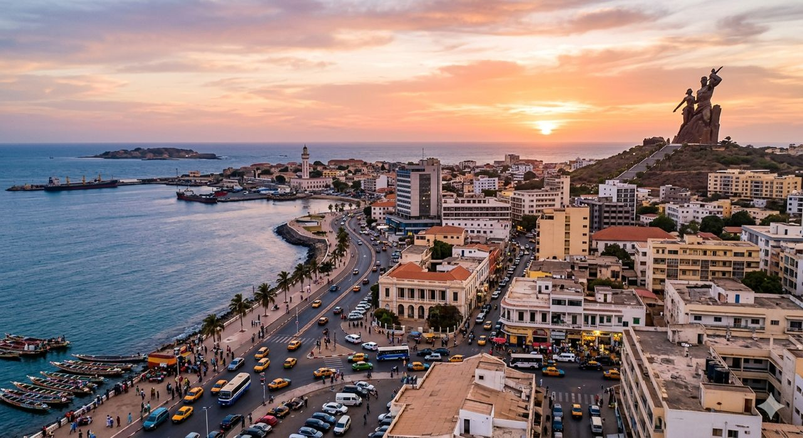
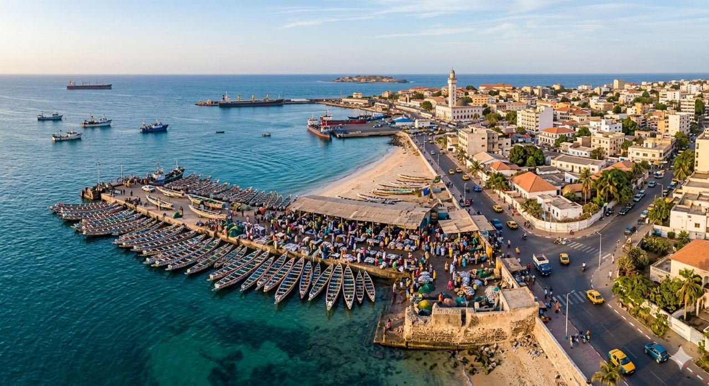
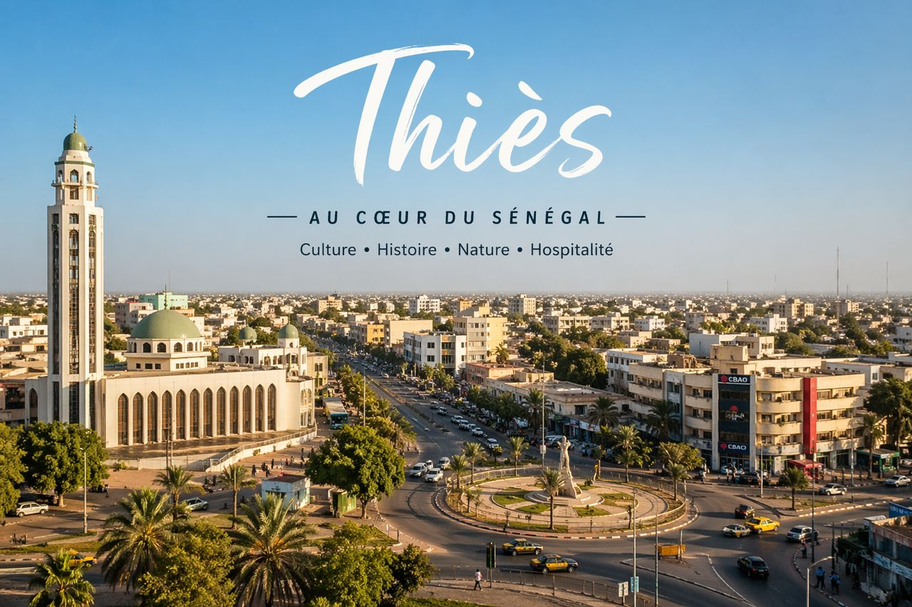
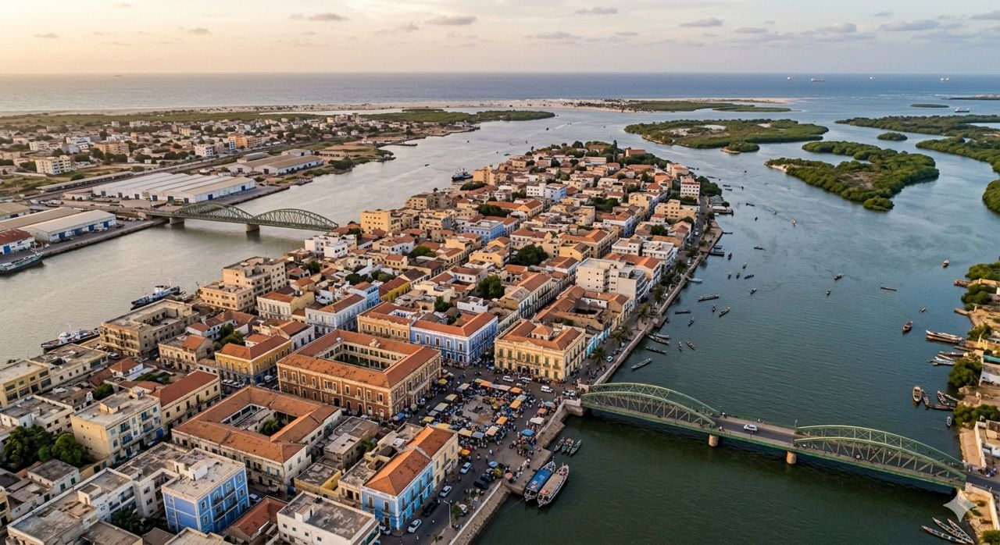
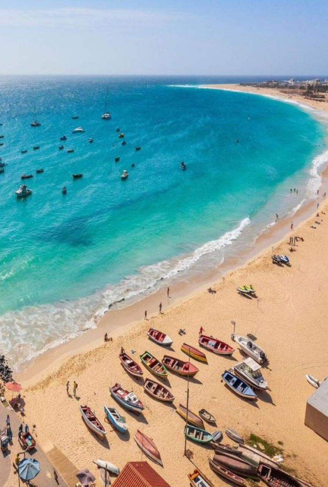
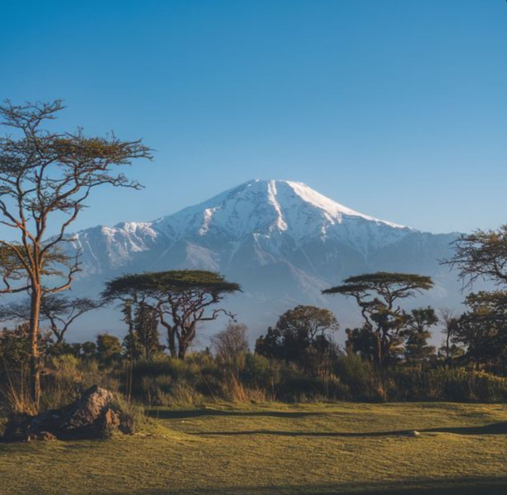
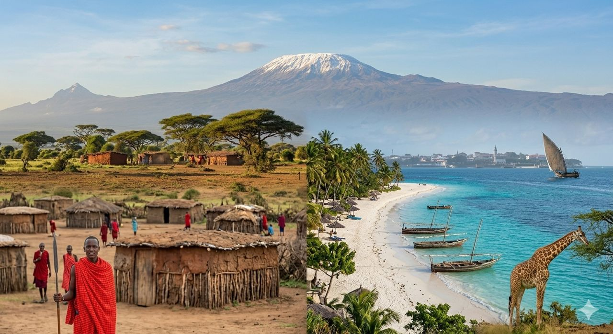

Explore le monde 🌍
Découvre des destinations incroyables
Découvre des destinations incroyables

Une capitale vibrante et cosmopolite,
où l'énergie urbaine rencontre l'histoire
de l'île de Gorée et les plages de la presqu'île.

Plongez dans l'authenticité de la Petite Côte
avec son port de pêche animé et le spectacle coloré
du retour des pirogues.

Explorez les richesses de la région de Thiès :
de ses manufactures de tapisseries renommées aux paysages
de baobabs environnants. Une étape culturelle incontournable
à seulement une heure de Dakar.

Plongez dans l'élégance de Saint-Louis. Reconnue par l'UNESCO,
la ville est un joyau de culture, célèbre pour son festival de jazz
et l'accueil chaleureux de ses habitants.
Découvrez un patrimoine culturel unique au monde,
une terre de traditions ancestrales et de paysages
sahéliens grandioses."

Évadez-vous dans un paradis atlantique aux dix îles,
mélange parfait de culture créole, de randonnées sauvages
et d'eaux turquoise.

Partez à la rencontre des 'Big Five' et découvrez
une culture riche, au milieu de paysages grandioses
et d'une faune préservée.

Une terre de contrastes saisissants, offrant les safaris
les plus célèbres d'Afrique et l'exotisme d'un archipel aux
eaux turquoise.